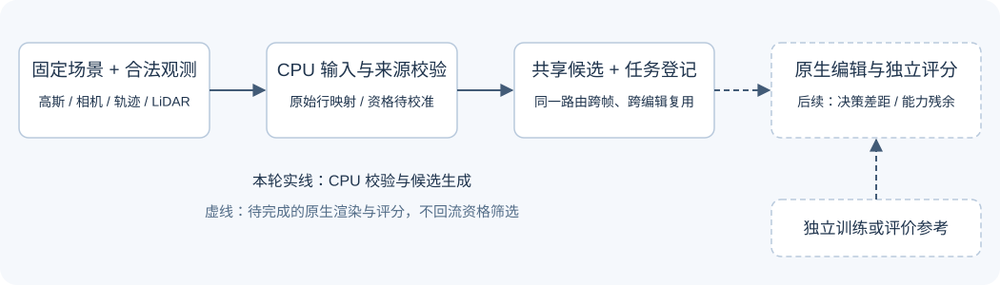

2026-10-31 · 单独交付报告
V43 R4：CPU 入口与候选准备
真实 CPU 小规模运行已完成，得到可追溯的冻结候选、共享绑定方案和完整任务登记。当前证据支持工程接线检查；编辑收益、决策差距和表示能力均等待原生渲染评价。
输入、候选与后续评价

第一轮只生成 keep/rebind 共享场景绑定；defer 留在查询风险层。同一方案跨所有登记帧与 none/delete/shift/rotate 复用，不按操作重新选身份。位置、协方差、颜色、不透明度、数量、运动参数和环境保持冻结。
本轮候选与分母
| 配置 | 合法观测帧 | 原静态行 | 候选行 | 来源组 | 共享方案 | 资格未知 / 全部 | 文件 |
|---|---|---|---|---|---|---|---|
| 原 16 视图仿真重建 | 16 | 667,559 | 392,468 | 3 | 8 | 4/4 | 候选完整归档 · 任务 |
| 同世界环绕观测重建 | 16 | 1,157,894 | 490,823 | 3 | 8 | 4/4 | 候选完整归档 · 任务 |
| 真实场景 1 · 原生 30K | 49 | 918,850 | 2,703 | 3 | 8 | 4/4 | 候选 · 任务 |
候选在原始静态高斯上按真实时变位置计算，与登记目标的合法稀疏 LiDAR 支撑做固定 0.25 m 邻域关联；首、中、末锚点组成互不重叠的最多三组。0.25 m 是本轮局部动作域定义，不是事前资格门槛，也不证明真实物理归属。组级二元方案的完整生成不代表完整行级搜索，更不代表已经完成原生评价。
两套仿真重建来自同一物理世界、同一对象祖先，放在同一开发分区。真实首场也属于已有开发资源，不构成封存测试或跨场景泛化证据。额外场景 2、3 和旧道路场景单独登记为未准备资源；未计入本轮已验收分母。
合法输入与资格边界
仿真原始车身掩码和轨迹沿用既有机制实验明确登记的传感器先知角色，LiDAR 为无噪稀疏观测；不能当作普通 RGB 部署条件。真实首场使用经过核对的 DEVA 实例关联、原始标注轨迹和实际 LiDAR 行，关联本身不是逐高斯真值，也不代表人工验收通过。
旧 M1 候选使用独立世界语义 / 深度；本轮不以其筛选候选、构造学生特征或资格。历史来源账本仅能作为隔离的原行映射诊断。编辑后图像、独立删车参考、学生输出和后验能力分箱不进入资格输入。
资格全部为 null：完整原场景贡献覆盖与历史背景显露支持尚未测量；视向仅记录合法方位扇区代理；运动项只完成 CPU 字段 / 相机 / 时间一致性检查。阈值待独立开发校准，没有将缺测填成通过，也没有报告“零合格率”或任意正式覆盖率。
验证与资源
按实际 0.5 核 cgroup 配额运行，数学库与 PyTorch 各限制为 1 线程，CUDA 隐藏。实际墙钟 106.64 秒，进程峰值 RSS 590.9 MiB，CPU 用户时间 44.58 秒、系统时间 5.86 秒。新增训练更新、原生渲染与奖励调用均为 0。
检查点按 CPU / mmap 只读加载，并检查组件布局、步数和张量边界样本；这不等于原生 Scene / CUDA 光栅器恢复。全部输入保存来源收据，运行后检查大小和修改时间未变化。共享方案在不同操作中的引用保持一致。
13 项 CPU 合同与实际产物检查全部通过，覆盖资格输入分母、未知状态、禁止字段、非法行 / 动作、候选方案完整性及跨操作共享状态。独立审查发现的接线问题已在本轮 CPU 准备前修正。具体检查记录：test_results.json；独立审查。
CPU 入口
在当前 AutoDL 的 V42 工作目录中执行下列命令；输出必须是新的 run 目录，已有目录会拒绝覆盖。环境和依赖沿用现有 Motion-Proj。
cd /root/autodl-tmp/motion_proj_v82_gn11_v42 /root/autodl-tmp/envs/motionproj/bin/python \ scripts/worldsim_v82/v43_ownership_20261028/v43_decision_r4/prepare_cpu.py \ --output /root/autodl-tmp/drivingeditor_repro/campaign/v43_ownership_20261028/v43_decision_r4_cpu_20261031/run_r2
程序固定本轮 0.25 m 候选范围、三锚点和四类操作，直接读取原始检查点 bundle 与登记观测；下一轮更改动作域或输入时应另立合同和 run。
共享诊断平台治理
原地址就地更新，共同入口由 40 个链接减为 4 个场景入口，桌面为两列卡片。三个场景页与旧道路场景页提前展示影像、几何和时间轴；采样、语义、归属等高级选项可展开。原实验组、媒体、诊断控件和记录导入导出保留。
入口与子页移除密集状态横幅和独立报告导航；报告、设计、roadmap 与状态不追加到可视诊断平台。维护规则已保存到平台目录。此报告独立交付。
场景 1 的高级设置新增折叠的“本轮候选点”：参考帧 raw101，来源组三组分别 1,013 / 1,596 / 94 行，共 2,703 行，显示其中 99 个均匀采样点。只读预览使用原生 30K 同一静态行空间；100 个历史原行坐标核对误差为 0，没有将候选点标成编辑结果或身份真值。
五页本地静态引用、必需控件和 ID 检查通过，共享脚本语法检查通过。浏览器工具因安全策略阻止本地 file:// 打开，未进行浏览器交互验收，也未改用替代浏览器或本地服务绕过。
HorizonForge 场景来源核查
用户提供的压缩包共 148 个文件，包含 128 个 MP4、32 个编辑演示案例；没有相机标定、轨迹数值、原始传感器数据或三维检查点文件。核查时官方项目页仍显示代码稍后开放，没有提供场景包下载链接。该页面未给链接不代表其他位置绝无资源。
本轮不把生成视频当作可编辑场景或独立编辑真值，不重复下载。后续若要加入这些场景，须先获取原始场景标识、合法 RGB / 相机 / 轨迹 / LiDAR 与重建来源，再按新祖先登记。压缩包与官方来源检查
下一步的明确入口
- 在真实 GPU 环境完成原生恢复、FP32 合成、原检查点直通与实际修改共享绑定两种 none，核对相机、运动和环境恢复。
- 在开发 / 校准分区落实完整场景贡献、目标新视向与历史背景支持，锁定资格阈值、保持域硬约束和联合操作权重。
- 对冻结小域方案逐个运行全部登记操作，保存浮点输出和有效区域分母；只有安全候选完整评价后才计算有限域决策差距。当前 loss、constraint、D/C 结果均为空，human_verdict=null。
- 在多个独立祖先上证明合法证据含有稳定动作排序信号后，再做轻量学习和训练范式比较。任何小时级训练先完成约 10 分钟真实保存、评价、完整恢复及下一阶段入口 smoke，额外开销单列。
本轮完成 CPU 入口与候选准备；没有运行新增训练或宣布编辑成功。CPU 模式实例保持开启。